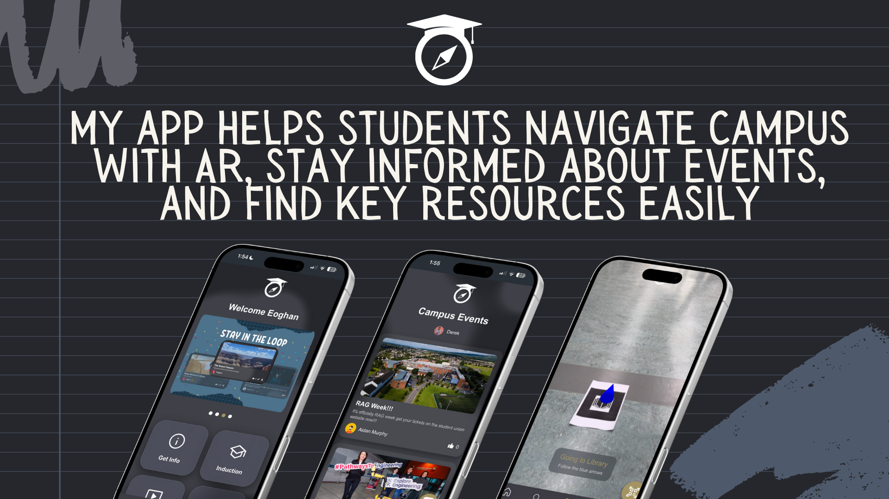
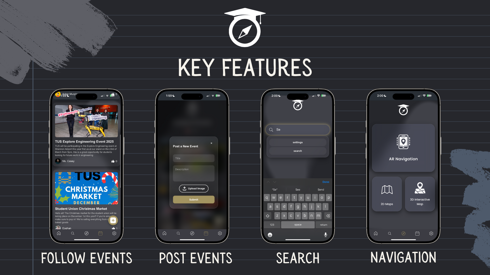
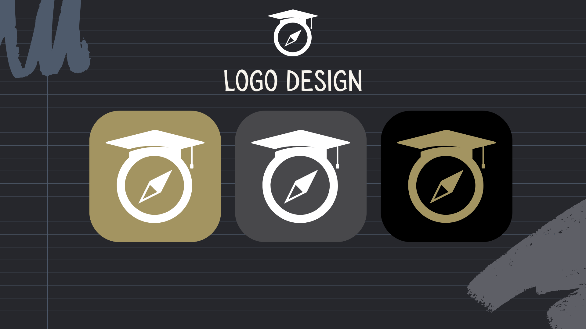

CampusNav
A student-friendly navigation app designed to help first-year students find their way around campus.
What needed solving
Starting university is a major adjustment, especially for first-year students at the Technological University of the Shannon (TUS) who may be coming straight from secondary school or from smaller towns. Many struggle with the practical side of a new environment: navigating a large campus, keeping up with lecture schedules and staying informed about events.
Without clear information, students miss opportunities and feel unnecessary stress during the critical first few weeks of college.
Figures from the research behind the project.
How I approached it
CampusNav is a responsive website and app built to make college life easier for new students. It acts as a central hub that brings the essential tools into one place, helping students settle in faster.
It combines augmented reality for intuitive navigation with a real-time events calendar and quick access to student resources. The design focuses on simplicity and accessibility, so students can find what they need without feeling overwhelmed.
What it does
- 01
AR navigation
Uses the phone’s camera to overlay directional arrows on screen, guiding students to places like the library or canteen via QR code markers.
- 02
Live events calendar
A real-time feed of Student Union and campus activities, so students can see event details and stay connected.
- 03
Centralised resources
Quick access to lecture timetables, support services and useful contacts, with no need to search across multiple platforms.
- 04
Real-time updates
Built with Firebase, so new event posts and updates appear instantly for every user without refreshing.
- 05
Responsive design
A clean, modern interface that works across phones, tablets and desktop computers.
The toolkit
A closer look



